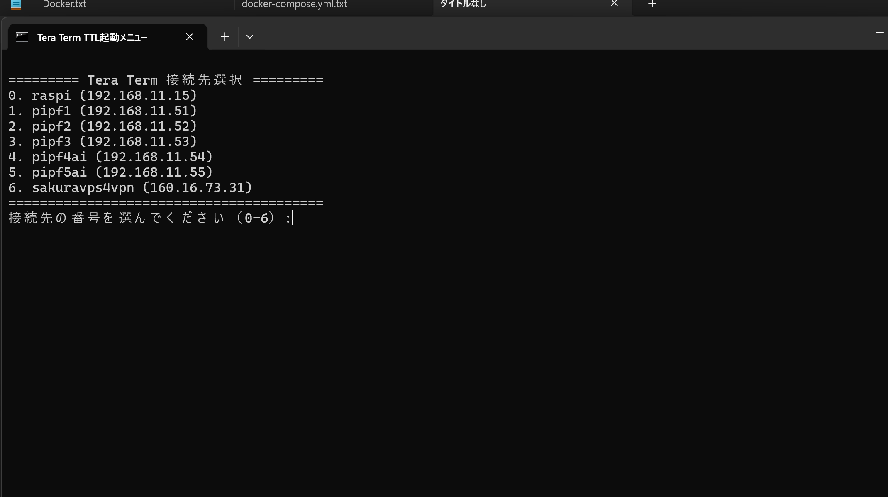
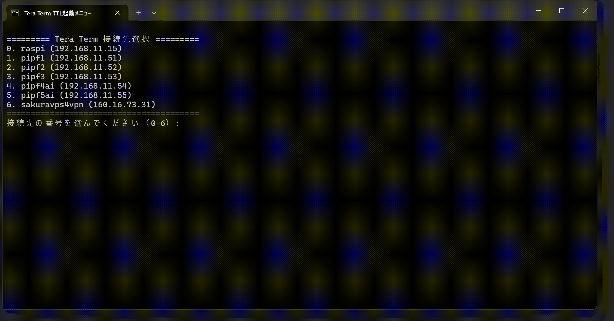

2025/4/10
少しづつでも楽をしたい
Tera Termでサーバにログインして作業すること多いのでログインが楽になるバッチを作成しました。
実行時の様子
start_teraterm.batの中身
@echo off
chcp 65001 >nul
title Tera Term TTL起動メニュー
:menu
echo.
echo ========= Tera Term 接続先選択 =========
echo 0. raspi (192.168.11.15)
echo 1. pipf1 (192.168.11.51)
echo 2. pipf2 (192.168.11.52)
echo 3. pipf3 (192.168.11.53)
echo 4. pipf4ai (192.168.11.54)
echo 5. pipf5ai (192.168.11.55)
echo 6. sakuravps4vpn (160.16.73.31)
echo ========================================
set /p choice=接続先の番号を選んでください（0-6）:
rem ログインttlがある場所を記載
cd C:\Users\XXXX\YYYY\ZZZZ\ttlマクロ\
if "%choice%"=="1" (
start pipf1_login.ttl
) else if "%choice%"=="2" (
start pipf2_login.ttl
) else if "%choice%"=="3" (
start pipf3_login.ttl
) else if "%choice%"=="4" (
start pipf4ai_login.ttl
) else if "%choice%"=="5" (
start pipf5ai_login.ttl
) else if "%choice%"=="6" (
start sakuravps4vpn_login.ttl
) else if "%choice%"=="0" (
start raspi4_login.ttl
) else (
echo 無効な選択です。0〜6の数字を入力してください。
pause
goto menu
)